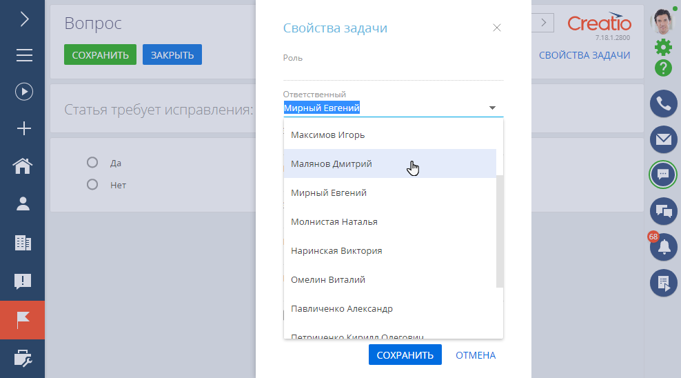
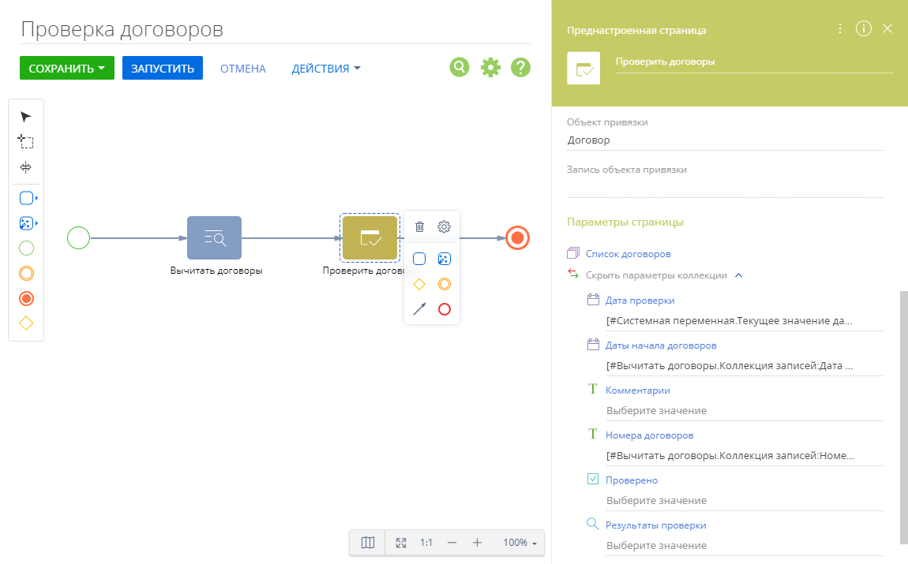
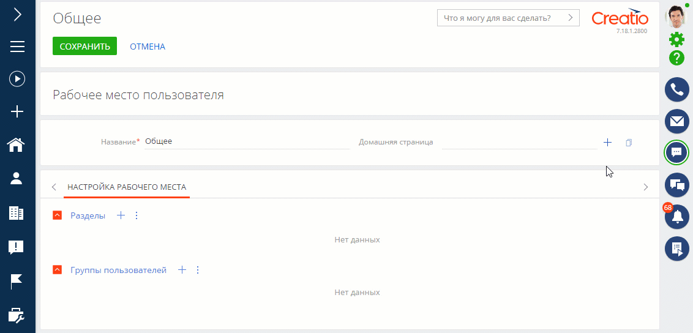
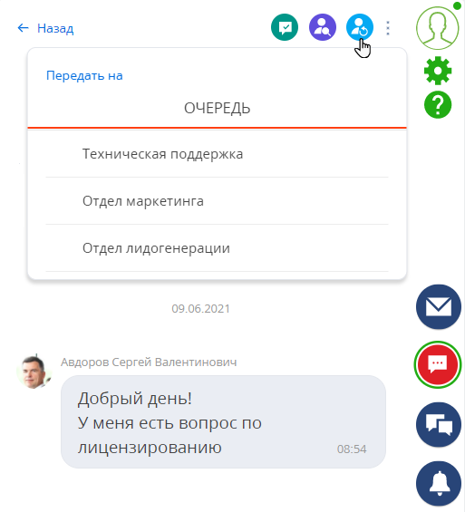
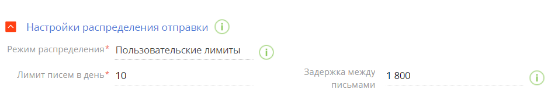
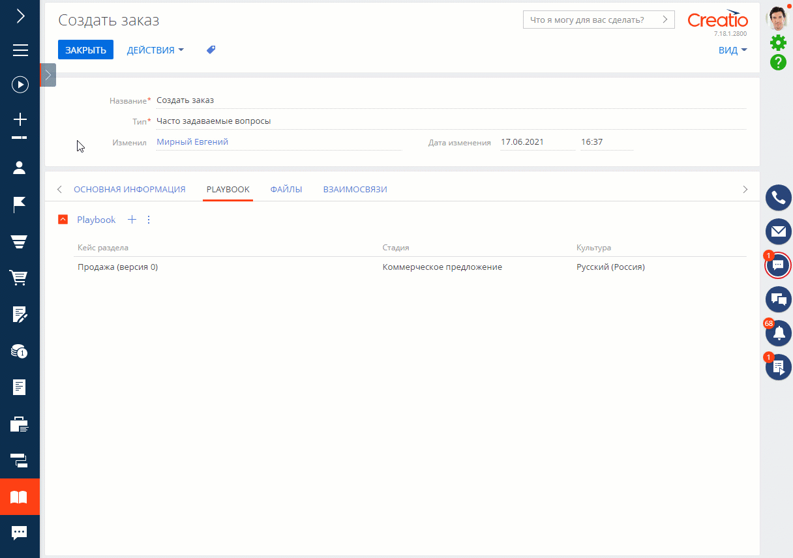
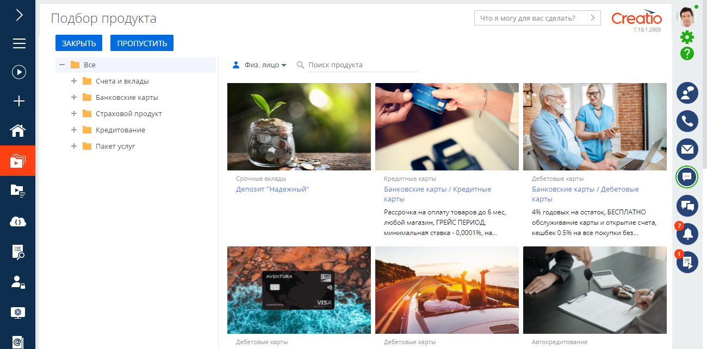

Представляем обзор изменений и улучшений, реализованных в Creatio версии 7.18.1.
Инструкция по обновлению для приложений on-site доступна в отдельной статье.
Видеообзор новинок релиза 7.18.1 >>>
Low-code платформа
Бизнес-процессы
Назначение задач по процессу на роли
- Появилась возможность в несколько кликов назначать задачи по процессу на роли с использованием пользовательских no-code инструментов. Выполнить задачу, назначенную на роль, сможет любой сотрудник, который в нее входит, что позволит оптимизировать нагрузку и более эффективно распределять задачи.
- Созданные в ходе бизнес-процесса интерактивные элементы, например, задачу или вопрос пользователю, можно в переадресовать на других пользователей или роли. Это можно сделать непосредственно на странице задачи или на коммуникационной панели.
Изменение ответственного в задаче, созданной по бизнес-процессу
-
Появилась возможность просмотреть на коммуникационной панели список доступных для выполнения групповых задач и взять их в работу. Меню быстрых действий в групповых задачах позволяет перейти к выполнению задачи, назначить ее на себя, чтобы выполнить позже, или передать на другого сотрудника непосредственно из коммуникационной панели.
Обработка групповой задачи на коммуникационной панели
-
Если в ходе работы по процессу открытая задача или другой интерактивный элемент процесса уже выполнены другим пользователем, то система уведомит об этом.
Подробнеее: Задачи по бизнес-процессам.
Преднастроенные страницы
- Изменения, внесенные в дизайнере преднастроенных страниц, для пользователей будут применены без принудительного обновления страницы в браузере.
Работа с коллекциями данных
- Появилась возможность работать с коллекциями записей в элементах Преднастроенная страница и Выполнить действие процесса. Это позволит передавать в параметрах списки записей, например, чтобы заполнить деталь на преднастроенной странице. Чтобы использовать функциональность в дизайнере процессов, необходимо в разделе Конфигурация добавить и настроить параметр “Сериализуемый список составных значений” для нужного элемента.
Работа с коллекцией записей в элементе Преднастроенная страница
Инструменты пользовательской настройки
Обновление данных на домашних страницах
- Чтобы обновить информацию на домашней странице, теперь не требуется обновлять вкладку браузера, достаточно кликнуть по заголовку страницы.
- При редактировании домашней страницы изменения для пользователей будут применены без принудительного обновления страницы в браузере. Чтобы их увидеть, достаточно повторно открыть страницу любым другим способом.
Настройка домашних страниц
- При создании домашней страницы появилась возможность изменить автоматически сгенерированный код элемента, чтобы было проще идентифицировать страницу в перечне элементов конфигурации. Для существующих страниц вы можете изменить код в том случае, если данная домашняя страница не замещает какую-либо другую.
Изменение уникального кода домашней страницы
- Удалить элемент домашней страницы можно по нажатию клавиши Delete.
Домашние страницы на мобильных устройствах
- Улучшено отображение домашних страниц на мобильных устройствах — все элементы сгруппированы в один столбец, что делает их более удобными для просмотра.
Базовые возможности платформы
Чаты
-
Добавлена возможность передавать чаты на другие подразделения. После перенаправления чат будет распределен на оператора выбранной очереди согласно настроенным для нее правилам маршрутизации.
Перевод чата на другую очередь - В чатах Facebook messenger улучшена обработка сообщений, отправленных в гостевом режиме. Если пользователь общался в чате как гость, а затем закрыл страницу, то оператор при отправке ответа получит уведомление.
- Добавлены всплывающие уведомления о новых сообщениях в чате. Это позволит операторам узнавать о новых сообщениях, если вкладка с чатами не активна. Чтобы получать уведомления, необходимо разрешить оповещения для сайта Creatio в браузере.
Инструменты разработки
OData
- Для работы с данными по протоколу OData 4 ускорено выполнение постраничного получения данных, которое реализуется с помощью параметров “$skip” и “$top”, что позволило оптимизировать потребление ресурсов. Для баз данных Oracle данное улучшение доступно в версии 12 и выше.
CRM-решения
Инструменты маркетинга
Отображение ссылок в письмах
- Добавлена обработка макросов, содержащих кириллический текст в гиперссылках. Теперь кириллический текст в адресе ссылки, добавленный с помощью макроса, отображается корректно.
Лимиты в настройках троттлинга
- Появилась возможность задать произвольные лимиты количества ежедневно отправляемых писем и задержку перед отправкой. Для этого в настройках троттлинга добавлен новый режим распределения отправки рассылок — “Пользовательские лимиты”. Параметры, указанные для данного режима, будут одинаковыми на протяжении всего периода отправки рассылки. Это позволяет снизить нагрузку на сайт и оптимизировать работу сотрудников, которые обрабатывают обратную связь по рассылке.
Настройка пользовательских лимитов
Инструменты продаж
Подсказки при работе с кейсами (Playbook)
-
Реализованы подсказки для получения оперативной информации из базы знаний на каждом шаге работы с лидом, продажей или другим объектом по динамическому кейсу. Например, вы можете ознакомиться с передовыми практиками и рекомендациями по подготовке презентации, перейдя на шаг “Презентация” процесса корпоративных продаж.
Настройка подсказок выполняется в статьях раздела База знаний на вкладке Playbook.
Пример подсказки в кейсе раздела Продажи
Банки и финансы
Подбор продуктов
- Появилась возможность работать с подбором продуктов в ходе выполнения бизнес-процесса. Для этого необходимо добавить в процесс преднастроенную страницу “Подобрать продукт” и настроить ее параметры, например, чтобы при переходе на этот шаг консультанту отображались рекомендации (Next Best Offer) или каталог актуальных продуктов.
Преднастроенная страница “Подобрать продукт”
Инструменты сервиса
Язык почтовых ящиков службы поддержки
- Для случаев, когда обращение регистрируется по письму от сотрудника, например, менеджера по работе с клиентами, добавлена возможность в определенных почтовых ящиках службы поддержки использовать язык по умолчанию. Это позволит для определенных ящиков всегда использовать конкретный язык, игнорируя другие правила.
Портал
Права организаций портала
-
Добавлена автоматическая раздача прав на обращение для организации портала, чтобы пользователи, которые входят в организацию, могли отслеживать статус по инцидентам, созданным коллегами.
Предоставление прав регулируется системной настройкой “Раздавать права на обращение организации портального пользователя” (код “GrantCasePermissionsForPortalOrganization”), по умолчанию настройка включена.